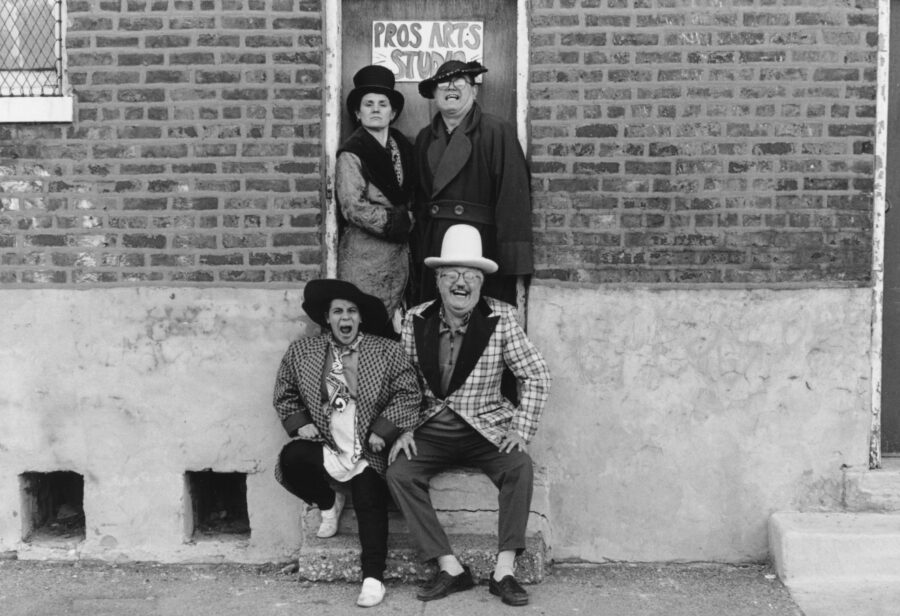

Imagination Doctors
Join us for the reception of our spring exhibition, Imagination Doctors: Pros Arts Studio. Celebrate with food, drink, and meet some of the exhibiting artists.
ABOUT THE EXHIBITION
Imagination Doctors is the first presentation on the long arc of the Pros Arts Studio ensemble and its influential legacy on Chicago’s art and education scene. Established in 1978, the Pilsen-based collective offered free, diverse artistic workshops and performances to Chicago’s communities across various locations, including streets, parks, community centers, and local K-12 schools. The organization assembled over 150 creative members, ranging from puppeteers and clowns to visual and performing artists, committed to highlighting the role artists play in enriching the lives of the communities in which they live. Pros Arts Studio integrated lively arts programming into the curricula of public schools, initiated the first Día de Los Muertos Parade in Pilsen, and hosted a Hotline 21 show, a Chicago Access Network Television call-in show that enhanced young students’ literacy and social skills while also amplifying their voices on social issues.
Growing out of a multi-year relationship that resulted in an installation for Learning Together: Art Education and Community (2024-25), this exhibition incorporates materials from their archive—print ephemera, photographs, videos, handmade performance sets—with newly commissioned works by contemporary artists, former collaborators, and students. The selected artists have been invited to develop new work that responds to the ensemble’s archive and/or invokes aspects of the ethos that has powered their multifaceted work for nearly fifty years. Pros Arts’ characteristic aspects include longevity, memory, improvisation, ephemerality, embeddedness, community, cultural specificity, joy, silliness, imagination, self-determination, challenging institutional models, and collaboration.
Maria Gaspar, a former collaborating teacher of Pros Arts, presents a work that reflects on her mother’s participation in the collective as a clown and the collective’s influence within her teaching and artistic practice. She says, “One of the most memorable experiences was learning how Pros Arts engaged with clowning. It revived an interest in clowning for me because I recalled that Pros Arts and my mom used clowning similarly—as a social practice.” A student of Pros Arts when in elementary school, filmmaker Alan Medina is making an experimental short film, One Grand Spot (working title), that documents the memories and materials housed in the 100-year-old Pilsen building that holds Pros Arts’ archive. Jiashun Zhou’s large-scale tapestry offers a virtual view of one of the building’s entrances. Alberto Aguilar partners with three of his students to create a short film that utilizes props and costumes from the archive. Victoria Martinez’s painting references backdrops created by students of Galileo Scholastic Academy during drama workshops conducted by Pros Arts in 1997. Mauricio López F. reveres the unrestrained creativity and imagination fostered during childhood by creating a drawing instrument that enables visitors to draw expressively, as a child would, on the gallery’s walls.
Anchoring these new works are a large-scale painted sculpture/performance set of a lavanderia (laundromat) from the Pros Arts archive; an ofrenda (offering or altar) honoring Pros Arts artists and collaborators who have died; an installation marking the hundreds of collaborators across Pros Arts’ history; and a collection of posters, cards, photographs, and more from the Pros Arts archive. By combining archival materials and newly commissioned artworks, Imagination Doctors inventively evokes the broad reach and lasting impact of Pros Arts Studio’s work in art, education, and community building.
ARTISTS
Alberto Aguilar, Sophia Karina English, William Estrada, Maria Gaspar, Mauricio López F., Victoria Martinez, Alan Medina, Leticia Pardo, Pros Arts Studio, Jiashun Zhou